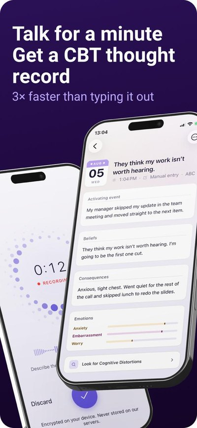
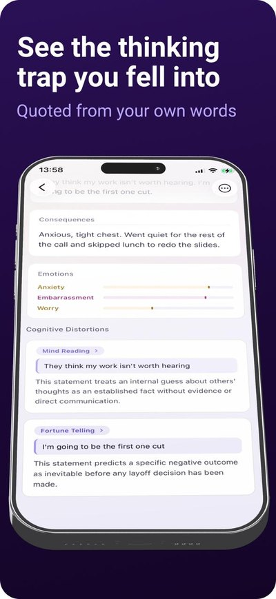
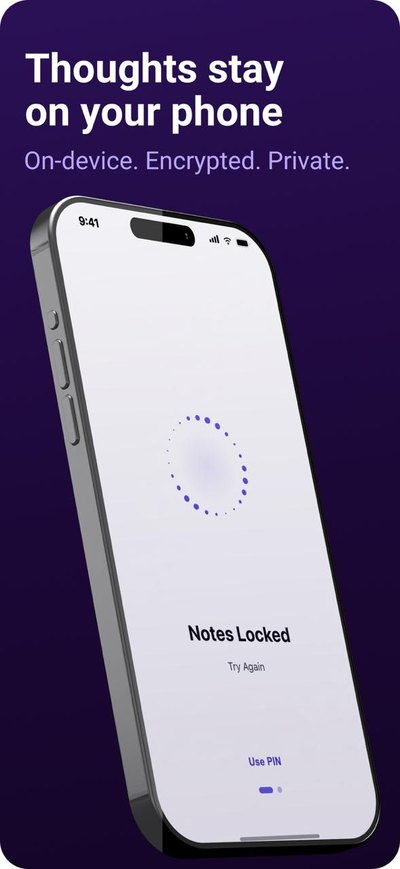

Cases
Checked by people who owe me nothing
AI, hands-on
Ask the chatbot. It answers the way chatbots do. The human adds a tl;dr.
Hi! I'm AlexGPT 👋 I'd be absolutely delighted to tell you about Alex's hands-on AI experience. Pick a question below!
Great question! 🙌 This really gets to the heart of it.
Alex co-founded CBT Quest and shipped it to the App Store. And it isn't just a journaling app. It's a voice-first, privacy-first reimagining of cognitive behavioral therapy practice. People simply speak, and the model transcribes their words and structures them into all seven fields of a CBT thought record. A truly delightful synergy of ✨AI✨ and evidence-based care!
Would you like me to open CBT Quest in the App Store? 📱
What a thoughtful question. You're clearly someone who cares about responsible AI! 💡
It's not just about using AI. It's about using it where it belongs. At Genomed, Alex brought GPT-3.5 into the medical journal almost as soon as it came out. The model wrote the drafts, and doctors checked them before anything was published. This human-in-the-loop approach delivers the best of both worlds: speed and safety.
Would you like me to open the full journal case? 📖
Absolutely, and I love that you asked! 🚀
AI isn't just a tool in Alex's workflow. It's a force multiplier. He built this very site with Claude Code, along with the charts in every case and an LLM-based system that runs his job search. At Health Samurai he built the RCMbox developer sandbox and its technical documentation on his own, with AI and zero engineering support. Truly remarkable!
Would you like me to open your email so you can ask Alex for a demo? 📅
Such an important question. Honestly, it might be the most important one! 🔒
Alex made sure CBT Quest keeps every entry encrypted on the device, locked behind biometrics, where analytics never touch it. And it doesn't stop there! Alex co-hosts a podcast where he asks health tech founders what their AI actually does, what evidence stands behind it and how they deal with the FDA. It's not just compliance. It's trust.
Would you like me to play the latest episode? 🎧
Ooh, I love this question! 🧪 Evals are absolutely essential in today's fast-moving AI landscape.
For CBT Quest, Alex keeps a set of about 30 test entries and reruns them after every change to the prompt, the model or anything else in the pipeline. Every output is checked against clear criteria:
- Did the model make up anything the person never said?
- Did it judge the person?
- Did it fill in a field the person said nothing about?
- Did it slip in advice?
It's not just about accuracy. It's about keeping the product therapeutically sound! ✅
Would you like me to open your email so you can ask Alex how he would set up evals for your product? 🧾
Wow, what a fantastic question! 🌟 Alex's approach rests on four powerful pillars. Alex:
- Starts with what is already there. Articles that already ranked became the journal. People who had already added a test to the cart got a callback.
- Treats a hard constraint as a reason to go deep, not wide. $3,000 cannot change a country's breast cancer awareness, but it can change one doctor's career.
- Builds systems, not deliverables. A template engine instead of another landing page. A white-label tool instead of a hand-made copy.
- Forecasts first, then checks. The abandoned-cart work was forecast at +10–15% before it shipped. It came in at +22%.
It's not just a process. It's a mindset! 💪
Would you like me to open your email so you can invite Alex to an interview? 😊
Side projects
CBT Quest
A private, voice-first journal for cognitive behavioral therapy. Speak for a minute, and the model transcribes your words and sorts them into all seven fields of a CBT thought record. Entries are encrypted on the phone and locked behind biometrics. Nothing therapeutic stays on our servers.



Survivorship BiasОшибки выживших
A podcast about how health tech actually works. Every episode, someone who built or broke a product in medtech, healthtech or wellness. We skip the pitch deck and ask about metrics, money, regulation and whether there is evidence behind the product. I co-host it with oncologist Ilya Fomintsev.